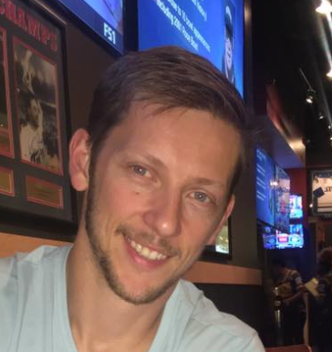

Logan Branjord
Software Developer / Entrepreneur
Skills & Interests
- Full Stack Development
- React and other Js Libs
- SharePoint and SPfx
- MSFT PowerApps, Flow
- Unity 3d and Mono (I started Oneshark games and coded all products Oneshark Games)
Favorite Projects Recently
- Sports Trivia App using AWS, MongoDb and live Sports API data (contract)
- Doors of Insanity - Video Game published internationally!
- Request Capital Assets Application - PowerApps + MSFT Flow
About Logan
I am local to the Minneapolis area and started my career as a contractor. I've had many successful long-term development projects thus far. I quickly discovered the power of web development within SharePoint as a content management system and acquired multiple certifications in the SharePoint software. After release of the SharePoint Framework + PowerApps I began to develop my skill set within the new tools and also lean into Full Stack development using React as a way to fill out my abilities and provide more value as a developer. I am currently enrolled in Engineering Flex Bootcamp offered by Thinkful!
Another interesting fact is that I love Game Development. My skills are within Unity 3D / IOS / Android and console systems. I have built a successful company called Oneshark Games and we have multiple products for sale on Steam, Nintendo Switch, Xbox and Playstation. This is a side hobby I use to build my programming skills in ways that business apps cannot accommodate. There is nothing like taking on the fantastic challenge of developing an app from scratch and seeing 100,000 players enjoy it later
It's impossible to limit my interests to a few paragraphs. I love software development so much I only hope to leave in my wake a mountain of successful projects that have helped the world and friendships that outlast the projects.